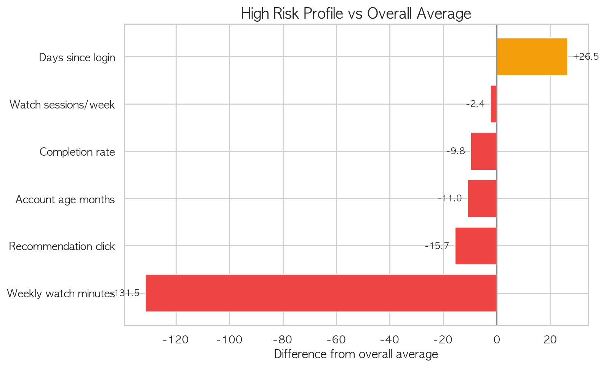
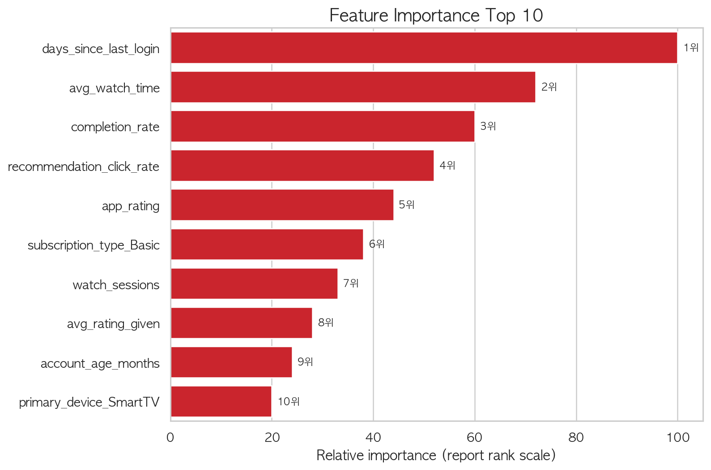
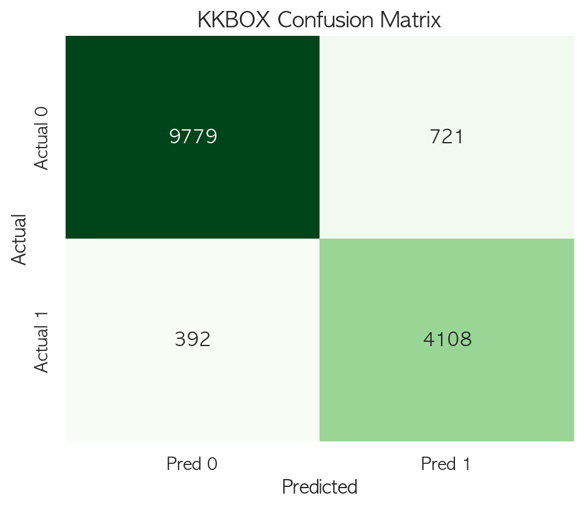

이탈 방지 전략 & 실행 계획
어떻게 잡을 것인가 — 데이터 기반 리텐션 캠페인 설계
1. 핵심 리텐션 전략 제안
고위험 고객 프로파일에서 도출한 두 가지 실행 전략
전략의 핵심 논리
고위험 고객의 72.7%가 Basic, 52.5%가 Mobile 사용자입니다.
이 두 축을 기반으로 완전 해지를 막는 맞춤형 전략을 설계합니다.
Standard 업그레이드 쿠폰
가치 체험 → 이탈 방지
상위 요금제의 가치(HD 화질, 다중 디바이스)를 체험하게 하여 Basic에서 느꼈던 불만을 해소하고, 해지 대신 유지 또는 업그레이드로 전환합니다.
Mobile-only 저가 요금제
완전 해지 → 저가 유지 전환
모바일에서만 사용할 수 있지만 더 저렴한 요금제를 제안하여, 가격 부담으로 인한 완전 해지를 저가 유지로 전환합니다. Netflix가 인도에서 실제 운영 중인 Mobile Plan을 참고합니다.
고위험 고객 프로파일 vs 전체 평균

High Risk 고객이 전체 평균 대비 어떤 변수에서 벗어나는지
Feature Importance (Top 10)

이탈 예측에 가장 크게 기여하는 변수 순위
전략 근거: Netflix 실제 사례
두 전략 모두 Netflix가 실제로 운영했거나 운영 중인 프로모션 메커니즘을 기반으로 합니다. 신규 유입용 프로모션을 기존 고위험 고객 retention에 재해석 적용한 것이 핵심입니다.
Netflix는 호주에서 30일 무료 체험을 폐지하고, 대신 한시적 요금제 업그레이드 프로모션으로 전환했습니다.
TechRadar: Netflix dropped free trial in AustraliaNetflix 인도에서 가입자 대상 Standard/Premium 30일 무료 업그레이드를 운영. Mobile-only 요금제도 별도로 운영 중입니다.
Gadgets 360: Netflix Free Upgrade Plans in India리텐션 전략의 비즈니스 근거
본 프로젝트의 핵심은 모든 고객에게 동일한 혜택을 제공하는 것이 아니라, 이탈 가능성이 높고 유지 가치가 큰 고객을 우선 선별해 제한된 마케팅 자원을 집중하는 것입니다.
Harvard Business Review는 고객 유지 전략에서 단순히 모든 고객을 붙잡는 것보다, 장기적으로 수익성과 관계 가치가 높은 고객을 구분해 관리하는 것이 중요하다고 설명합니다. 이는 본 프로젝트의 Risk Score 기반 Top-K 타겟팅과 같은 방향입니다.
HBR: The Value of Keeping the Right Customers비용 구조와 운영 리스크
업그레이드 쿠폰은 현금 할인이 아닌 상위 경험 제공입니다. 고객은 Basic 요금을 유지한 채 Standard 혜택을 체험하므로 직접적인 매출 손실은 제한적입니다. 다만 동시접속, 화질, 트래픽 증가에 따른 인프라 한계비용은 존재합니다.
프로모션 종료 시 원래 요금제로 복귀하거나 상위 유지를 선택하도록 명확한 선택지 제시가 필요합니다. 다운그레이드 경험이 오히려 불만을 키울 수 있으므로 종료 후 행동을 별도 모니터링해야 합니다.
2. Campaign Action Matrix
Risk Group별 차별화된 리텐션 캠페인 전략
High Risk — 즉시 개입
이탈률 87.6%- 개인화 복귀 메시지 발송
- 할인/혜택 쿠폰 제공
- 최근 관심 장르 기반 추천
- 모바일 친화 짧은 콘텐츠 큐레이션
- 주간 시청 145분 (평균의 52%)
- 미접속 38.6일
- Basic 요금제 72.7%
- Mobile 사용 52.5%
Medium Risk — 가벼운 개입
이탈률 42.05%- 추천 콘텐츠 알림 발송
- 시청 이어보기 유도
- 앱 경험 개선 메시지
- 요금제 업그레이드 안내
- 전체 평균의 2배 이탈 위험
- 고비용 할인보다 저비용 넛지 적합
- 적극 개입 시 유지 전환 가능
Low Risk — 유지 관리
이탈률 5.4%- 일반 추천 알고리즘 유지
- 충성 고객 혜택 프로그램
- 만족도 유지 및 리뷰 유도
- 이탈 위험이 매우 낮음
- 고비용 할인 캠페인 불필요
- 관계 유지 중심 전략 적합
3. 예산별 타겟팅 전략
최소 예산
500~1,000명 타겟
이탈자 22~42% 포착
Lift 4.19~4.47x
균형 전략
2,000명 타겟
이탈자 67.85% 포착
Lift 3.39x
공격적 방어
3,000명 타겟
이탈자 82.04% 포착
Lift 2.73x
4. 캠페인 운영 원칙
Risk Score First
캠페인 대상 여부는
모델 ranking으로 결정합니다.
감이 아닌 데이터 기반 우선순위.
KMeans Cluster Second
메시지와 혜택 세분화에는
KMeans cluster를
보조 기준으로 사용합니다.
Top 10% Pilot
초기 집행은 상위 10%로 제한하고
효과 검증 후 확장합니다.
5. 실제 데이터 검증: KKBOX
동일한 Stacking 파이프라인을 실제 구독 서비스 데이터에 적용한 결과
합성 데이터 vs 실제 데이터
Netflix 데이터는 synthetic(합성) 데이터이므로 모델 성능에 한계가 있었습니다.
실제 구독 서비스인 KKBOX 데이터에 동일 파이프라인을 적용한 결과, 성능이 대폭 상승했습니다.
| 데이터셋 | 유형 | ROC AUC | F1 Score | Precision | Recall |
|---|---|---|---|---|---|
| Netflix | 합성 데이터 | 0.8953 | 0.7184 | 0.7377 | 0.7000 |
| KKBOX | 실제 데이터 | 0.9770 | 0.8807 | 0.8507 | 0.9129 |
KKBOX Confusion Matrix

동일 Stacking 파이프라인의 KKBOX 실제 데이터 분류 결과
의미: Netflix 합성 데이터에서의 낮은 성능은 데이터 자체의 한계이지, 파이프라인이나 비즈니스 인사이트의 문제가 아닙니다. 동일한 Stacking 파이프라인이 실제 구독 서비스 데이터(KKBOX)에서 ROC AUC 0.977, F1 0.881을 달성했으며, 이는 실제 기업 데이터에 적용할 경우 유의미한 이탈 예측과 리텐션 전략 수립이 가능함을 뒷받침합니다.
6. 프로젝트 최종 결론
프로젝트 여정: 데이터에서 전략까지
Netflix 고객 이탈 예측 & 리텐션 전략
50,000명의 사용자 행동 데이터 기반 End-to-End ML Pipeline
핵심 인사이트
프로젝트에서 배운 것
실행 로드맵
상위 10% 고위험
고객 1,000명 대상
리텐션 캠페인 실행
30/60일 retention
측정 및 가드레일
지표 모니터링
효과 확인 시
상위 20~30%로
캠페인 확장
모델 재학습 주기화
risk score 자동 갱신
캠페인 자동 트리거
피처 한계와 확장 방향
현재 피처로 확인한 것
본 프로젝트의 데이터는 고객의 현재 상태를 요약한 정적 피처 중심으로 구성되어 있다. 최근 로그인 공백, 주간 평균 시청 시간, 완료율, 추천 클릭률, 요금제, 주 사용 기기 등 특정 시점의 고객 상태를 파악하는 데 유용했다.
이 변수들이 모델의 핵심 이탈 신호로 작동하며, 최근 접속이 줄고 시청량과 추천 반응이 낮은 고객이 이탈 위험이 높다는 패턴을 확인했다.
정적 피처만으로는 부족한 것
현재 시청 시간이 낮은 고객이 원래부터 적게 보던 고객인지, 최근 급격히 사용량이 줄어든 고객인지 구분할 수 없다. 이 차이는 리텐션 전략을 설계할 때 매우 중요하다.
행동이 어떤 흐름으로 악화되었는지, 즉 이탈 위험이 높아지는 과정을 정적 피처만으로는 충분히 설명하기 어렵다.
시계열·이벤트 로그 피처가 추가된다면
실제 서비스 환경에서 시계열 기반 행동 로그가 추가된다면, 고객이 이탈 위험 상태로 이동하는 과정을 더 정밀하게 파악할 수 있다.
접속 빈도 감소율
세션 수 변화 추이
검색 및 찜 이력
결제 실패 여부
캠페인 반응 이력
해지·재가입 패턴
본 프로젝트의 모델은 현재 주어진 정적 피처만으로도 이탈 위험 고객을 효과적으로 우선순위화할 수 있었다. 그러나 실제 기업 데이터에서는 시계열·이벤트 로그 피처를 함께 활용함으로써 "누가 이탈할 가능성이 높은가"를 넘어 "왜 이탈 위험이 높아졌는가"와 "어떤 개입이 효과적인가"까지 더 구체적으로 분석할 수 있을 것이다.
이 프로젝트는 "누가 떠나는가"에서 시작해
"누구를, 어떻게, 얼마나 잡을 것인가"까지 도달했습니다.
모델은 완벽한 분류기가 아니라, 의사결정을 돕는 도구입니다.
데이터가 말하는 우선순위에 따라 자원을 집중할 때,
리텐션 캠페인은 비로소 효율적이 됩니다.